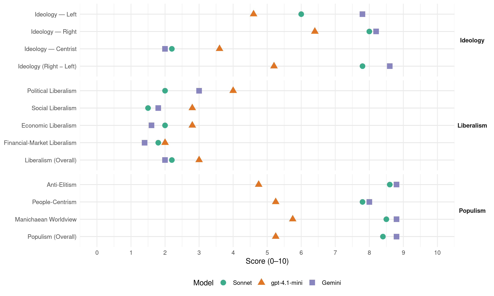

ATAKA (Bulgaria, 2013)
manifesto_id 80710_201305
Get full text: This site shows derived annotations and short verbatim quotes only. The full manifesto text is © Manifesto Project / WZB — obtain it via manifesto-project.wzb.eu using the manifesto_id above.
Headline scores
| Dimension | Sonnet | gpt-4.1-mini | Gemini |
|---|---|---|---|
| Populism (Overall) | 8.4 | 5.2 | 8.8 |
| Anti-Elitism | 8.6 | 4.8 | 8.8 |
| People-Centrism | 7.8 | 5.2 | 8.0 |
| Manichaean Worldview | 8.5 | 5.8 | 8.8 |
| Ideology (Right − Left) | 7.8 | 5.2 | 8.6 |
| Liberalism (Overall) | 2.2 | 3.0 | 2.0 |
| Political Liberalism | 2.0 | 4.0 | 3.0 |
| Social Liberalism | 1.5 | 2.8 | 1.8 |
| Economic Liberalism | 2.0 | 2.8 | 1.6 |
| Financial-Market Liberalism | 1.8 | 2.0 | 1.4 |
Evidence per dimension
Economic Liberalism
Gemini · score 1.0 · verified · chunk 1
“приватизация на българската икономика и природни”
Планът “Ран-Ът” предвиждаше бърза и тотална приватизация на българската икономика и природни ресурси, без оглед на цената
Gemini · score 2.0 · verified · chunk 2
“извадена от условията на либералната, чисто пазарна икономика”
Националната аптечна система ще бъде извадена от условията на либералната, чисто пазарна икономика.
Gemini · score 2.0 · verified · chunk 3
“националният дух не може да бъде”
намеса на държавата българското изкуство е обречено на мъчителна смърт. Националният дух не може да бъде изнесен на пазара и да зависи
Gemini · score 2.0 · verified · chunk 4
“изпълнявани от преобладаващо държавни фирми с 51% държавна собственост”
Основните обекти в ифраструктурата могат да бъдат изпълнявани от преобладаващо държавни фирми с 51% държавна собственост и 49% частна българска.
Gemini · score 1.0 · verified · chunk 5
“национализация на стратегически отрасли от икономиката”
Средствата за постигане на тази цел включват национализация на стратегически отрасли от икономиката, нова прогресивна данъчна
gpt-4.1-mini · score 1.0 · verified · chunk 1
“монополисти”
Монополисти са и “Мобилтел” и “Глобул”, които надписват сметките за телефон и печелят стотици милиони годишно от най-бедните в ЕС българите.
gpt-4.1-mini · score 2.0 · verified · chunk 2
“АТАКА е за премахване на концесиите и договорите”
АТАКА е за преразглеждане и прекратяване на концесиите и договорите за ползване на язовири и езера, както и евентуалното замърсяване от използването им.
gpt-4.1-mini · score 4.0 · verified · chunk 3
“подпомагане за активно развитие на дребния и средния бизнес”
Подпомагане за активно развитие на дребния и средния бизнес противопоставяне на монополните компании. Развитието на сектора “високи технологии” обхваща основните и приоритетни области в икономиката на ЕС и е ключова част от най-приоритетните проекти на Европа.
gpt-4.1-mini · score 3.0 · verified · chunk 4
“гаранцията за ед-накви правни условия за стопанска дейност чрез предотвратяване на злоупо-требата с монополизма, нелоялната конкуренция и защита на потребителя (чл. 19, ал. 2)”
живеем във време на пряко и несанкционирано погазване на текстове, за-писани в гл. 1-ва “Основни начала” от Конституцията на Република Бълга-рия, които прокламират : равенството пред закона (чл. 6); забраната за образуване на партии на ет-ническа, расова или верска основа (чл. 11, ал. 4) ; изключителната държав-на собственост върху подземните богатства (чл. 18, ал. 1); гаранцията за ед-накви правни условия за стопанска дейност чрез предотвратяване на злоупо-требата с монополизма, нелоялната конкуренция и защита на потребителя (чл. 19, ал. 2).
gpt-4.1-mini · score 4.0 · verified · chunk 5
“Създаване на държавни банки за целево кредитиране - малък и среден бизнес”
Банки: Създаване на държавни банки за целево кредитиране - малък и среден бизнес, за изграждането на производствени мощности и земеделие. Създаване на пълна прозрачност в банковия сектор при определяне на лихвите по кредитите.
Sonnet · score 1.0 · verified · chunk 1
“пълно отваряне на финансовите и стоковите пазари”
пълно оттегляне на държавата от икономиката и пълно отваряне на финансовите и стоковите пазари за гигантските наднационални корпорации — а това означава смърт за националните икономики
Sonnet · score 2.0 · verified · chunk 2
“Националната аптечна система ще бъде извадена от условията на либералната, чисто пазарна икономика”
Националната аптечна система ще бъде извадена от условията на либералната, чисто пазарна икономика. Въвежда се държавна регулация за изграждане на социално значима структура за снабдяването с лекарства с фиксирани от държавата цени на лекарствата.
Sonnet · score 3.0 · verified · chunk 3
“противопоставяне на монополните компании”
Подпомагане за активно развитие на дребния и средния бизнес противопоставяне на монополните компании.
Sonnet · score 2.0 · verified · chunk 5
“Субсидиране и развитие на родно производство”
Субсидиране и развитие на родно производство, в това число и земеделие. Увеличение на преразпределителната функция на държавата с бюджетни средства
Financial-Market Liberalism
Gemini · score 1.0 · verified · chunk 1
“чуждите банки у нас са прибрали”
За периода 2008 - 2012 чуждите банки у нас са прибрали само от такси 4 милиарда 293 милиона лева.
Gemini · score 2.0 · verified · chunk 2
“публикуване в единен публичен онлайн-регистър на: всички такси, тарифи и лихвени условия на банковата система”
Въвеждане на задължително публикуване в единен публичен онлайн-регистър на: всички такси, тарифи и лихвени условия на банковата система
Gemini · score 1.0 · verified · chunk 3
“безлихвено кредитиране на студентите чрез”
стипендия се отпуска автоматично, а при много добър успех - според доходите - в граници, определени от правилник. Безлихвено кредитиране на студентите чрез държавната Българска банка за
Gemini · score 2.0 · verified · chunk 4
“такси върху банковите транзакции, от данък върху телевизионните реклами”
попълван от процент от ДДС, от такси върху банковите транзакции, от данък върху телевизионните реклами, хазарта и процент от
Gemini · score 1.0 · verified · chunk 5
“Регулация на лихвите по кредити със специален закон”
Отпадане на редица такси, които банките събират от клиентите си. Регулация на лихвите по кредити със специален закон.
gpt-4.1-mini · score 1.0 · verified · chunk 1
“чуждите банки у нас са прибрали само от такси 4 милиарда”
За периода 2008 - 2012 чуждите банки у нас са прибрали само от такси 4 милиарда 293 милиона лева. По милиард на година.
gpt-4.1-mini · score 2.0 · verified · chunk 3
“финансиране по европейските програми за иновационните проекти”
Имат осигурено финансиране по европейските програми за иновационните проекти. Чрез методите и стратегията на модернизиране на държавата, използвайки иновационните продукти във високите технологии, във всички области се решават основните приоритетни задачи.
gpt-4.1-mini · score 3.0 · verified · chunk 5
“Засилен контрол и регулация в банковия сектор”
Банки: Създаване на държавни банки за целево кредитиране - малък и среден бизнес, за изграждането на производствени мощности и земеделие. Създаване на пълна прозрачност в банковия сектор при определяне на лихвите по кредитите. Засилен контрол и регулация в банковия сектор.
Sonnet · score 1.0 · verified · chunk 1
“чуждите банки у нас са прибрали само от такси”
За периода 2008 - 2012 чуждите банки у нас са прибрали само от такси 4 милиарда 293 милиона лева. По милиард на година.
Sonnet · score 2.0 · verified · chunk 2
“облекчено кредитиране на малките и средни предприятия”
АТАКА предлага специално внимание на държавата върху проблемите на малкия и средния бизнес: облекчено кредитиране на малките и средни предприятия от Банката за развитие и търговските банки; пряко субсидиране чрез финансово-кредитни механизми
Sonnet · score 2.0 · verified · chunk 3
“Безлихвено кредитиране на студентите чрез държавната”
Безлихвено кредитиране на студентите чрез държавната Българска банка за развитие.
Sonnet · score 3.0 · verified · chunk 4
“такси върху банковите транзакции”
Държавният пенсионен фонд, гарантиран с недвижимо държавно имущество, ще бъде попълван от процент от ДДС, от такси върху банковите транзакции, от данък върху телевизионните реклами
Sonnet · score 1.0 · verified · chunk 5
“Регулация на лихвите по кредити със специален закон”
Засилен контрол и регулация в банковия сектор. Отпадане на редица такси, които банките събират от клиентите си. Регулация на лихвите по кредити със специален закон
Political Liberalism
Gemini · score 2.0 · verified · chunk 1
“подслушванията на политици, журналисти и бизнесмени”
Последният скандал - от април 2013 г., с подслушванията на политици, журналисти и бизнесмени при управлението на ГЕРБ
Gemini · score 3.0 · verified · chunk 2
“подслушванията на политици, журналисти и бизнесмени”
Последният скандал - от април 2013 г., с подслушванията на политици, журналисти и бизнесмени при управлението на ГЕРБ
Gemini · score 3.0 · verified · chunk 3
“Национален референдум по въпроса за”
военнопромишлен комплекс ПП АТАКА предлага: 1. Национален референдум по въпроса за оставането на Република България в
Gemini · score 5.0 · verified · chunk 4
“равенството пред закона (чл. 6); забраната за образуване на партии”
Конституцията на Република България, които прокламират : равенството пред закона (чл. 6); забраната за образуване на партии на етническа, расова или
Gemini · score 2.0 · verified · chunk 5
“контрола върху подвластната на световния финансов елит БНБ”
правителството по примера на Унгария да си върне контрола върху подвластната на световния финансов елит БНБ и да я разследва
gpt-4.1-mini · score 2.0 · verified · chunk 1
“нарушение на правата на гражданите”
Последният скандал - от април 2013 г., с подслушванията на политици, журналисти и бизнесмени при управлението на ГЕРБ, е илюстрация за последните две десетилетия. Това нарушение на правата на гражданите се правеше и при предишни правителства.
gpt-4.1-mini · score 3.0 · verified · chunk 2
“нарушение на правата на гражданите”
Последният скандал - от април 2013 г., с подслушванията на политици, журналисти и бизнесмени при управлението на ГЕРБ, е илюстрация за последните две десетилетия. Това нарушение на правата на гражданите се правеше и при предишни правителства.
gpt-4.1-mini · score 6.0 · verified · chunk 3
“задължително изучаване на задължително изучаван предмен”Вероучение”“
АТАКА е твърдо за въвеждане на задължително изучаван предмен “Вероучение” или “Закон Божи”, както е бил изучаван до 1944 г. Това са основните, азбучни принципи на православната вяра, които всяко българско покръстено дете трябва да изучава още от първи клас в задължителната програма.
gpt-4.1-mini · score 3.0 · verified · chunk 4
“равенството пред закона (чл. 6); забраната за образуване на партии”
живеем във време на пряко и несанкционирано погазване на текстове, за-писани в гл. 1-ва “Основни начала” от Конституцията на Република Бълга-рия, които прокламират : равенството пред закона (чл. 6); забраната за образуване на партии на ет-ническа, расова или верска основа (чл. 11, ал. 4) ; изключителната държав-на собственост върху подземните богатства (чл. 18, ал. 1); гаранцията за ед-накви правни условия за стопанска дейност чрез предотвратяване на злоупо-требата с монополизма, нелоялната конкуренция и защита на потребителя (чл. 19, ал. 2).
gpt-4.1-mini · score 6.0 · verified · chunk 5
“парите на държавата трябва да работят за благото на българският народ”
Бюджетът и парите на държавата трябва да работят за благото на българският народ, а не в услуга на западни колонизатори. Какво ще направи АТАКА на власт с бюджета: Пренасочване на пари към повишаване на доходите.
Sonnet · score 1.0 · verified · chunk 1
“Осъзнахте, че това не е пазарна икономика, демокрация”
Осъзнахте, че това не е пазарна икономика, демокрация и преход към по-добър живот. Това е колонизация, икономическо робство
Sonnet · score 2.0 · verified · chunk 2
“политически инструмент на всяка управляваща партия”
на практика това министерство продължава да е политически инструмент на всяка управляваща партия или коалиция. Последният скандал - от април 2013 г., с подслушванията на политици, журналисти и бизнесмени при управлението на ГЕРБ
Sonnet · score 3.0 · verified · chunk 3
“Национален референдум по въпроса за оставането”
1. Национален референдум по въпроса за оставането на Република България в НАТО.
Sonnet · score 4.0 · mixed · chunk 4
“независимост и отчетност на съдебната система”
напредък в предвидените шест направления: независимост и отчетност на съдебната система, прозрачност и ефективност на съдебната система, преследване на корупцията
Sonnet · score 2.0 · verified · chunk 5
“да си върне контрола върху подвластната на световния финансов елит БНБ”
Нужно е правителството по примера на Унгария да си върне контрола върху подвластната на световния финансов елит БНБ и да я разследва за зловредната й роля
Liberalism (Overall)
Gemini · score 1.0 · verified · chunk 1
“пълно оттегляне на държавата от икономиката”
МВФ и Световната банка натискаха българските правителства още от 1990 г. за тотална и безогледна приватизация, орязване на социалния сектор, пълно оттегляне на държавата от икономиката
Gemini · score 2.0 · verified · chunk 2
“извадена от условията на либералната, чисто пазарна икономика”
Националната аптечна система ще бъде извадена от условията на либералната, чисто пазарна икономика.
Gemini · score 2.0 · verified · chunk 3
“националният дух не може да бъде”
намеса на държавата българското изкуство е обречено на мъчителна смърт. Националният дух не може да бъде изнесен на пазара и да зависи
Gemini · score 3.0 · verified · chunk 4
“изпълнявани от преобладаващо държавни фирми с 51% държавна собственост”
Основните обекти в ифраструктурата могат да бъдат изпълнявани от преобладаващо държавни фирми с 51% държавна собственост и 49% частна българска.
Gemini · score 2.0 · verified · chunk 5
“национализация на стратегически отрасли от икономиката”
Средствата за постигане на тази цел включват национализация на стратегически отрасли от икономиката, нова прогресивна данъчна
gpt-4.1-mini · score 1.0 · verified · chunk 1
“чуждите банки у нас са прибрали само от такси 4 милиарда”
За периода 2008 - 2012 чуждите банки у нас са прибрали само от такси 4 милиарда 293 милиона лева. По милиард на година.
gpt-4.1-mini · score 2.0 · verified · chunk 2
“нарушение на правата на гражданите”
Последният скандал - от април 2013 г., с подслушванията на политици, журналисти и бизнесмени при управлението на ГЕРБ, е илюстрация за последните две десетилетия. Това нарушение на правата на гражданите се правеше и при предишни правителства.
gpt-4.1-mini · score 4.0 · verified · chunk 3
“подпомагане за активно развитие на дребния и средния бизнес”
Подпомагане за активно развитие на дребния и средния бизнес противопоставяне на монополните компании. Развитието на сектора “високи технологии” обхваща основните и приоритетни области в икономиката на ЕС и е ключова част от най-приоритетните проекти на Европа.
gpt-4.1-mini · score 3.0 · verified · chunk 4
“равенството пред закона (чл. 6); забраната за образуване на партии”
живеем във време на пряко и несанкционирано погазване на текстове, за-писани в гл. 1-ва “Основни начала” от Конституцията на Република Бълга-рия, които прокламират : равенството пред закона (чл. 6); забраната за образуване на партии на ет-ническа, расова или верска основа (чл. 11, ал. 4) ; изключителната държав-на собственост върху подземните богатства (чл. 18, ал. 1); гаранцията за ед-накви правни условия за стопанска дейност чрез предотвратяване на злоупо-требата с монополизма, нелоялната конкуренция и защита на потребителя (чл. 19, ал. 2).
gpt-4.1-mini · score 5.0 · verified · chunk 5
“Създаване на държавни банки за целево кредитиране - малък и среден бизнес”
Банки: Създаване на държавни банки за целево кредитиране - малък и среден бизнес, за изграждането на производствени мощности и земеделие. Създаване на пълна прозрачност в банковия сектор при определяне на лихвите по кредитите. Засилен контрол и регулация в банковия сектор.
Sonnet · score 1.0 · verified · chunk 1
“колонизация, икономическо робство и път към унищожаването”
Осъзнахте, че това не е пазарна икономика, демокрация и преход към по-добър живот. Това е колонизация, икономическо робство и път към унищожаването на България.
Sonnet · score 2.0 · verified · chunk 2
“Пазарните принципи на здравната реформа…разрушиха из основи нейната структура”
Пазарните принципи на здравната реформа в България, вместо да преобразят системата в полза на всички граждани на републиката, разрушиха из основи нейната структура и създадоха вместо това специфична мафиотска организация за обсебване на огромния паричен ресурс от бюджета.
Sonnet · score 3.0 · verified · chunk 3
“Всички български природни ресурси при управлението на АТАКА”
Всички български природни ресурси при управлението на АТАКА ще бъдат изключителна държавна собственост, без право на продаване и отдаване на концесии.
Sonnet · score 3.0 · verified · chunk 4
“Основните обекти в ифраструктурата могат да бъдат изпълнявани от преобладаващо държавни фирми”
Основните обекти в ифраструктурата могат да бъдат изпълнявани от преобладаващо държавни фирми с 51% държавна собственост и 49% частна българска.
Sonnet · score 2.0 · verified · chunk 5
“Финансовите турбокапиталисти вече търсят начин”
Финансовите турбокапиталисти вече търсят начин как да приложат в България сценарий, който да ни доограби и да ни превърне в дългови роби
Anti-Elitism
Gemini · score 10.0 · verified · chunk 1
“национални предатели в правителствата и парламентите”
Трябва да помните всеки един национални предатели в правителствата и парламентите дотук, за да му търсим сметка
Gemini · score 9.0 · verified · chunk 2
“политически инструмент на всяка управляваща партия”
на практика това министерство продължава да е политически инструмент на всяка управляваща партия или коалиция.
Gemini · score 8.0 · verified · chunk 3
“колониалния период унизи неговия статут”
авторитети на обществото ни. Колониалният период унизи неговия статут и достойнство. АТАКА е за
Gemini · score 8.0 · verified · chunk 4
“колониалното робство, наложено от няколко поредни националпредателски правителства”
население в резултат на плана “Ран-Ът”, в резултат на колониалното робство, наложено от няколко поредни националпредателски правителства. Този курс на геноцид
Gemini · score 9.0 · verified · chunk 5
“наложено от няколко поредни националпредателски правителства”
в резултат на колониалното робство, наложено от няколко поредни националпредателски правителства. Този курс на геноцид
gpt-4.1-mini · score 2.0 · verified · chunk 1
“чужди компании”
Всичко, което беше построено с труда на нашите бащи и майки, го заграбиха чужди компании. Много от заводите бяха закрити, защото бяха конкуренция на западните фирми.
gpt-4.1-mini · score 7.0 · verified · chunk 2
“МВР при управлението на АТАКА ще се превърне от политически инструмент”
МВР при управлението на АТАКА ще се превърне от политически инструмент за мачкане на опоненти на властта и от преплетена с подземния свят структура в действителен орган на реда и сигурността на ВСИЧКИ БЪлГАРИ, а не на олигархията и на отделни близки до властта.
gpt-4.1-mini · score 3.0 · verified · chunk 3
“противопоставяне на монополните компании”
Подпомагане за активно развитие на дребния и средния бизнес противопоставяне на монополните компании. Развитието на сектора “високи технологии” обхваща основните и приоритетни области в икономиката на ЕС и е ключова част от най-приоритетните проекти на Европа - конкретно в жп сектора изграждане на Единната европейска мрежа.
gpt-4.1-mini · score 5.0 · mixed · chunk 4
“несправед-ливост, неравнопоставеност пред за-кона и пред органите”
Защо има недостиг на спрведливост? гаУсещането за господстваща несправед-ливост, неравнопоставеност пред за-кона и пред органите, които го прила-т, невъзможността за реализиране и отсто-яване на основните граждански и човешки права съпътства ежедневието на българските граждани.
gpt-4.1-mini · score 7.0 · verified · chunk 5
“колониалното робство, наложено от няколко поредни националпредателски правителства”
Курсът на геноцид трябва да спре! Какво показва тази картина? Че България се обезлюдава, остарява и маргинализира своето население в резултат на плана “Ран-Ът”, в резултат на колониалното робство, наложено от няколко поредни националпредателски правителства. Този курс на геноцид може и трябва да се прекрати с решителни мерки и промени.
Sonnet · score 10.0 · verified · chunk 1
“интелектуалния и политическия ни елит”
го разбрахте и отново изправарихте интелектуалния и политическия ни елит, който все още не смее да изрече истината
Sonnet · score 9.0 · verified · chunk 2
“МВР ще се превърне от политически инструмент”
АТАКА е за: …МВР при управлението на АТАКА ще се превърне от политически инструмент за мачкане на опоненти на властта и от преплетена с подземния свят структура в действителен орган на реда и сигурността на ВСИЧКИ БЪЛГАРИ, а не на олигархията и на отделни близки до властта.
Sonnet · score 7.0 · verified · chunk 3
“националпредателските правителства след 1997 г.”
унищожени от националпредателските правителства след 1997 г. Създава се националната геологопроучвателна агенция
Sonnet · score 8.0 · verified · chunk 4
“националпредателски правителства”
в резултат на колониалното робство, наложено от няколко поредни националпредателски правителства. Този курс на геноцид може и трябва да се прекрати
Sonnet · score 9.0 · verified · chunk 5
“националпредателски правителства”
в резултат на колониалното робство, наложено от няколко поредни националпредателски правителства. Този курс на геноцид може и трябва да се прекрати
Ideology — Centrist
Gemini · score 2.0 · verified · chunk 2
“в услуга на българските граждани от всички социални слоеве”
Министерството на вътрешните работи ще работи в услуга на българските граждани от всички социални слоеве.
gpt-4.1-mini · score 2.0 · verified · chunk 1
“няма леви и десни партии”
Видяхме, че няма леви и десни партии. Те се наричаха различно, но правеха едно и също - разпродаваха страната ни за жълти стотинки.
gpt-4.1-mini · score 5.0 · verified · chunk 2
“МВР при управлението на АТАКА ще се превърне от политически инструмент”
МВР при управлението на АТАКА ще се превърне от политически инструмент за мачкане на опоненти на властта и от преплетена с подземния свят структура в действителен орган на реда и сигурността на ВСИЧКИ БЪлГАРИ, а не на олигархията и на отделни близки до властта.
gpt-4.1-mini · score 2.0 · verified · chunk 3
“пряко участие на държавата за решаване на стратегическите цели”
стратегическите направления в икономиката, които да бъдат в синхрон с европейската стратегия, формулирана в “Бяла книга”; Пряко участие на държавата за решаване на стратегическите цели на основата на публично-частното партньорство.
gpt-4.1-mini · score 4.0 · verified · chunk 4
“несправед-ливост, неравнопоставеност пред за-кона и пред органите”
Защо има недостиг на спрведливост? гаУсещането за господстваща несправед-ливост, неравнопоставеност пред за-кона и пред органите, които го прила-т, невъзможността за реализиране и отсто-яване на основните граждански и човешки права съпътства ежедневието на българските граждани.
gpt-4.1-mini · score 5.0 · verified · chunk 5
“парите на държавата трябва да работят за благото на българският народ”
Бюджетът и парите на държавата трябва да работят за благото на българският народ, а не в услуга на западни колонизатори. Какво ще направи АТАКА на власт с бюджета: Пренасочване на пари към повишаване на доходите.
Sonnet · score 2.0 · verified · chunk 1
“Няма леви и десни партии”
Видяхме, че няма леви и десни партии. Те се наричаха различно, но правеха едно и също - разпродаваха страната ни
Sonnet · score 2.0 · verified · chunk 2
“АТАКА смята, че сегашната организация и управление”
АТАКА смята, че сегашната организация и управление на селското стопанство е изцяло погрешна и вредна за българските интереси. Тя принуждава българския селянин да води безперспективен, мизерен живот.
Sonnet · score 2.0 · verified · chunk 3
“Главната цел, която се фокусира”
Главната цел, която се фокусира, е рязко повишаване на брутния вътрешен продукт и подобряване на благосъстоянието
Sonnet · score 2.0 · verified · chunk 4
“интересът на офицерския корпус е ясен”
Интересът на офицерския корпус е ясен - колкото повече хора на заплата, толкова по-добре. Но е недопустимо при крайния недостиг на средства
Sonnet · score 3.0 · verified · chunk 5
“Задача на патриотичните сили”
Задача на патриотичните сили ще бъде да организират съпротивата срещу готвения сценарий
Ideology — Left
Gemini · score 8.0 · verified · chunk 1
“заграбиха чужди компании. Много от заводите”
Всичко, което беше построено с труда на нашите бащи и майки, го заграбиха чужди компании. Много от заводите бяха закрити
Gemini · score 8.0 · verified · chunk 2
“ликвидация на Здравната каса и фор.иране на държавен Фонд”
конкретните мерки, с които ще се изрази тази политика, са: ликвидация на Здравната каса и фор.иране на държавен Фонд на народното здраве
Gemini · score 7.0 · verified · chunk 3
“противопоставяне на монополните компании”
развитие на дребния и средния бизнес противопоставяне на монополните компании. Развитието на сектора “високи
Gemini · score 8.0 · verified · chunk 4
“колониалната система на аборигенски заплати и пенсии и да толерират наднационалните и чуждите компании”
тристранка” с правителствата и оставят тези правителства да поддържат колониалната система на аборигенски заплати и пенсии и да толерират наднационалните и чуждите компании у нас, които експлоатират
Gemini · score 8.0 · verified · chunk 5
“национализация на стратегически отрасли от икономиката”
Средствата за постигане на тази цел включват национализация на стратегически отрасли от икономиката, нова прогресивна данъчна
gpt-4.1-mini · score 3.0 · verified · chunk 1
“плосък данък, който обслужва олигарсите”
Идва уж ляво правителство, начело с БСП, а въвежда плосък данък, който обслужва олигарсите и големите пари и удря по слабите социални слоеве.
gpt-4.1-mini · score 7.0 · verified · chunk 2
“АТАКА е за преминаване от”пазарни”, тоест корумпирани здравни услуги”
АТАКА е за преминаване от “пазарни”, тоест корумпирани здравни услуги, към система на осигуряване на здравни грижи на всеки българин, без оглед на социалното му положение.
gpt-4.1-mini · score 3.0 · verified · chunk 3
“противопоставяне на монополните компании”
Подпомагане за активно развитие на дребния и средния бизнес противопоставяне на монополните компании. Развитието на сектора “високи технологии” обхваща основните и приоритетни области в икономиката на ЕС и е ключова част от най-приоритетните проекти на Европа - конкретно в жп сектора изграждане на Единната европейска мрежа.
gpt-4.1-mini · score 3.0 · verified · chunk 4
“експлоатират труда и ресурсите на бъл-гарите”
липсата на защита на цената на труда на българите бе основният грях на синдикатите, които трябваше да се преборят за нея. Вместо активна и истинска борба за доходите съ-ществуващите у нас профсъюзи си играят на “тристранка” с правител-ствата и оставят тези правителства да поддържат колониалната система на аборигенски заплати и пенсии и да толерират наднационалните и чуждите компании у нас, които експлоатират труда и ресурсите на бъл-гарите.
gpt-4.1-mini · score 7.0 · verified · chunk 5
“Премахване на ДДС за определени групи продукти храни, лекарства, учебници”
Данъчна политика : Промяна в данъчната система. Премахване на ДДС за определени групи продукти храни, лекарства, учебници, книги и други. Въвеждане (връщане) на прогресивно подоходно облагане и премахване на плоския данък; премахване на данък върху лихвите по депозитите на физически лица; жестоки санкции за злоупотребите с ДДС.
Sonnet · score 6.0 · verified · chunk 1
“социална справедливост, защита на историята ни”
За България пътят е само в тази посока - българизъм в икономиката, социална справедливост, защита на историята ни от фалшификации
Sonnet · score 7.0 · verified · chunk 2
“Одържавяване на електроразпределителните дружества”
Промяна в собствеността на средствата за производство на стоки и услуги с монополен характер и от особена социална значимост. Одържавяване на електроразпределителните дружества! Също и на водоснабдителните дружества, ликвидиране на паразитиращи посредници
Sonnet · score 3.0 · verified · chunk 3
“Подпомагане за активно развитие на дребния и средния бизнес”
Подпомагане за активно развитие на дребния и средния бизнес противопоставяне на монополните компании.
Sonnet · score 6.0 · verified · chunk 4
“рязко повишаване на минималната пенсия”
АТАКА е за кардинално преразглеждане на пенсионната система, за отмяна на т. нар. точкова система и за рязко повишаване на минималната пенсия до равнището на най-ниските европейски нива
Sonnet · score 8.0 · verified · chunk 5
“национализация на стратегически отрасли от икономиката”
Средствата за постигане на тази цел включват национализация на стратегически отрасли от икономиката, нова прогресивна данъчна система и рязък скок на доходите
Ideology (Right − Left)
Gemini · score 9.0 · verified · chunk 1
“борци против чуждите колониални интереси”
Основното делене на българските партии, политици и държавници е: Предатели на българския народ - служители на чужди колониални интереси; Верни на българския народ - борци против чуждите колониални интереси.
Gemini · score 9.0 · verified · chunk 2
“Край на циганската престъпност по селата”
Край на циганската престъпност по селата! Битовата престъпност вече двайсет години е бич номер едно
Gemini · score 9.0 · verified · chunk 3
“основен стълб в националистическата визия”
VII ГЛАВА ОБРАЗОВАНИЕ Образованието е основен стълб в националистическата визия за ра-звитието на държавата
Gemini · score 8.0 · verified · chunk 4
“колониалната система на аборигенски заплати и пенсии и да толерират наднационалните и чуждите компании”
тристранка” с правителствата и оставят тези правителства да поддържат колониалната система на аборигенски заплати и пенсии и да толерират наднационалните и чуждите компании у нас, които експлоатират
Gemini · score 8.0 · verified · chunk 5
“национализация на стратегически отрасли от икономиката”
Средствата за постигане на тази цел включват национализация на стратегически отрасли от икономиката, нова прогресивна данъчна
gpt-4.1-mini · score 5.0 · verified · chunk 1
“няма леви и десни партии”
Видяхме, че няма леви и десни партии. Те се наричаха различно, но правеха едно и също - разпродаваха страната ни за жълти стотинки.
gpt-4.1-mini · score 7.0 · verified · chunk 2
“АТАКА е за преминаване от”пазарни”, тоест корумпирани здравни услуги”
АТАКА е за преминаване от “пазарни”, тоест корумпирани здравни услуги, към система на осигуряване на здравни грижи на всеки българин, без оглед на социалното му положение.
gpt-4.1-mini · score 4.0 · verified · chunk 3
“противопоставяне на монополните компании”
Подпомагане за активно развитие на дребния и средния бизнес противопоставяне на монополните компании. Развитието на сектора “високи технологии” обхваща основните и приоритетни области в икономиката на ЕС и е ключова част от най-приоритетните проекти на Европа - конкретно в жп сектора изграждане на Единната европейска мрежа.
gpt-4.1-mini · score 4.0 · verified · chunk 4
“несправед-ливост, неравнопоставеност пред за-кона и пред органите”
Защо има недостиг на спрведливост? гаУсещането за господстваща несправед-ливост, неравнопоставеност пред за-кона и пред органите, които го прила-т, невъзможността за реализиране и отсто-яване на основните граждански и човешки права съпътства ежедневието на българските граждани.
gpt-4.1-mini · score 6.0 · verified · chunk 5
“Премахване на ДДС за определени групи продукти храни, лекарства, учебници”
Данъчна политика : Промяна в данъчната система. Премахване на ДДС за определени групи продукти храни, лекарства, учебници, книги и други. Въвеждане (връщане) на прогресивно подоходно облагане и премахване на плоския данък; премахване на данък върху лихвите по депозитите на физически лица; жестоки санкции за злоупотребите с ДДС.
Sonnet · score 9.0 · verified · chunk 1
“националистическите движения завземат по-широка територия”
Националистическите и антиглобалистките движения завземат по-широка територия и европейските народи се събуждат
Sonnet · score 8.0 · verified · chunk 2
“Законодателството…е създадено според икономическите правила на неолиберализма и колониализма”
Законодателството, свързано със селското стопанство и околната среда, е създадено според икономическите правила на неолиберализма и колониализма. Това поставя в неравностойно положение българските земеделци спрямо производителите в Европейския съюз
Sonnet · score 7.0 · verified · chunk 3
“Образованието е основен стълб в националистическата визия”
Образованието е основен стълб в националистическата визия за развитието на държавата ни.
Sonnet · score 7.0 · verified · chunk 4
“аборигенски заплати и пенсии”
оставят тези правителства да поддържат колониалната система на аборигенски заплати и пенсии и да толерират наднационалните и чуждите компании у нас
Sonnet · score 8.0 · verified · chunk 5
“нова прогресивна данъчна система”
национализация на стратегически отрасли от икономиката, нова прогресивна данъчна система и рязък скок на доходите
Ideology — Right
Gemini · score 9.0 · verified · chunk 1
“намесата й в българската вътрешна политика”
Поставяне на безкомпромисни условия към Турция за прекратяване на намесата й в българската вътрешна политика чрез манипулации
Gemini · score 9.0 · verified · chunk 2
“Край на циганската престъпност по селата”
Край на циганската престъпност по селата! Битовата престъпност вече двайсет години е бич номер едно
Gemini · score 9.0 · verified · chunk 3
“основен стълб в националистическата визия”
VII ГЛАВА ОБРАЗОВАНИЕ Образованието е основен стълб в националистическата визия за ра-звитието на държавата
Gemini · score 7.0 · verified · chunk 4
“в резултат от набезите на цигански банди са обезлюдени къщи”
Особено значим е този проблем в райони, населени със смесено население. В резултат от набезите на цигански банди са обезлюдени къщи, махали и цели села
Gemini · score 7.0 · verified · chunk 5
“Ограничаване притока на чуждестранни граждани”
Нужно е още: Ограничаване притока на чуждестранни граждани на пазара на труда без необходимото
gpt-4.1-mini · score 7.0 · verified · chunk 1
“Национализмът по света върви нагоре”
Национализмът по света върви нагоре, глобализмът – надолу. Националистическите движения по света са отпорът срещу колониалната схема на същата тази уолстрийтска върхушка.
gpt-4.1-mini · score 8.0 · verified · chunk 2
“Край на циганската престъпност по селата!”
Край на циганската престъпност по селата! Битовата престъпност вече двайсет години е бич номер едно за българското население в малките селища на страната и в кварталите на големите градове.
gpt-4.1-mini · score 6.0 · verified · chunk 3
“патриотично и модерно българско образование”
АТАКА има ясно виждане за съживяване на патриотично и модерно българско образование. Нужен е нов закон за училищното образование със следните важ-ни акценти: Изцяло обхващане на 5-годишните деца в предучилищната за-дължителна подготовка и задължение на държавата да осигури ме-ста в детските градини и училища за всички 4-годишни деца.
gpt-4.1-mini · score 5.0 · verified · chunk 4
“ПП АТАКА предлага въвеждането на законово регламентиран системен контрол”
Правата на пострадалите – над правата на престъпника! ПП АТАКА предлага въвеждането на законово регламентиран системен контрол от страна на пострадалите от престъпления граждани, върху работата на право прилагащите институции - органите на разследването, на прокуратурата и съда по време на дейността по установяване, разкриване и разследване на престъпленията, внасянето на обвинението в съда и в хода на съдебното производство.
gpt-4.1-mini · score 6.0 · verified · chunk 5
“Ограничаване притока на чуждестранни граждани на пазара на труда”
Нужно е още: Ограничаване притока на чуждестранни граждани на пазара на труда без необходимото образование и квалификация. Ускоряване издаването на т.нар. синя карта за граждани на трети държави с български произход и българско самосъзнание и тяхното привличане на българския пазар на труда.
Sonnet · score 9.0 · verified · chunk 1
“нахлуването у нас на ислямистки емисари”
АТАКА има план за създаване на закони, които да сложат рязка преграда пред нахлуването у нас на ислямистки емисари под форма на фондации
Sonnet · score 8.0 · verified · chunk 2
“Край на циганската престъпност по селата”
Край на циганската престъпност по селата! Битовата престъпност вече двайсет години е бич номер едно за българското население в малките селища на страната и в кварталите на големите градове.
Sonnet · score 8.0 · verified · chunk 3
“Изхвърляне от учебниците на неверните теории”
Изхвърляне от учебниците на неверните теории за “тюркски”, “алтайски”, “чудски”, “фински” произход на българите
Sonnet · score 8.0 · verified · chunk 4
“набезите на цигански банди”
Особено значим е този проблем в райони, населени със смесено население. В резултат от набезите на цигански банди са обезлюдени къщи, махали и цели села
Sonnet · score 7.0 · verified · chunk 5
“Ограничаване притока на чуждестранни граждани на пазара на труда”
Ограничаване притока на чуждестранни граждани на пазара на труда без необходимото образование и квалификация. Ускоряване издаването на т.нар. синя карта за граждани на трети държави с български произход
Manichaean Worldview
Gemini · score 10.0 · verified · chunk 1
“Ние сме добрите, защото искаме добро”
Но това, което искаме, е добро за българския народ и това е кристално ясно. Ние сме добрите, защото искаме добро за народа си.
Gemini · score 9.0 · verified · chunk 2
“отнемане на здравеопазването от мафията”
АТАКА предлага отнемане на здравеопазването от мафията и връщането му на българския народ.
Gemini · score 8.0 · verified · chunk 3
“унищожени от националпредателските правителства”
възстановени службите и институциите, унищожени от националпредателските правителства след 1997 г. Създава
Gemini · score 8.0 · verified · chunk 4
“Този курс на геноцид може и трябва да се прекрати”
наложено от няколко поредни националпредателски правителства. Този курс на геноцид може и трябва да се прекрати с решителни мерки и промени.
Gemini · score 9.0 · verified · chunk 5
“Курсът на геноцид трябва да спре”
рязко повишаване на БВП в България и на стандарта на живот. Курсът на геноцид трябва да спре! Какво показва тази картина?
gpt-4.1-mini · score 8.0 · verified · chunk 1
“лошите”
Ние сме добрите, защото искаме добро за народа си. Тези, които искат народът ни да е роб на чужди интереси, да живее бедно и да е без самочувствие, са против нас. Те са лошите.
gpt-4.1-mini · score 6.0 · verified · chunk 2
“преплетена с подземния свят структура”
МВР при управлението на АТАКА ще се превърне от политически инструмент за мачкане на опоненти на властта и от преплетена с подземния свят структура в действителен орган на реда и сигурността на ВСИЧКИ БЪлГАРИ, а не на олигархията и на отделни близки до властта.
gpt-4.1-mini · score 2.0 · verified · chunk 3
“националното предателство, наречено”преход”“
Днес у нас на практика е невъзможно да се узнае точната картина на природните ни дадености - редки и ценни метали, рудни изкопаеми, водни ресурси и мине-рални извори. Бруталното ликвидиране на научните институти, които изследваха тези сектори, доведе до хаос и липса на адекватна информация какво страната ни има като богатства. През периода на националното предателство, наречено “преход”, бяха унищожени: Комитетът по геология, На-учноизследователският институт по полезни изкопаеми (НИПИ), Управлението по търсене, което включваше: геоложкото картира-не, геохимичните изследвания, геофизическите работи.
gpt-4.1-mini · score 4.0 · mixed · chunk 4
“Бог е високо, а за съжаление”царят” - недостижимо далеко”
На принудения да се задоволи с местното правосъдие българин не му остава друго, освен да си припомни, че Бог е високо, а за съжаление “царят” - недостижимо далеко… Реална защита на имота и живота с оръжие!
gpt-4.1-mini · score 7.0 · verified · chunk 5
“Курсът на геноцид трябва да спре!”
Курсът на геноцид трябва да спре! Какво показва тази картина? Че България се обезлюдава, остарява и маргинализира своето население в резултат на плана “Ран-Ът”, в резултат на колониалното робство, наложено от няколко поредни националпредателски правителства.
Sonnet · score 10.0 · verified · chunk 1
“Ние сме добрите, защото искаме добро”
Ние сме добрите, защото искаме добро за народа си. Тези, които искат народът ни да е роб на чужди интереси, са против нас. Те са лошите.
Sonnet · score 8.0 · verified · chunk 2
“колониалната схема, в която сме натикани”
За коригиране на грешната и ощетяваща България икономическа схема, в която сме натикани, е нужно: България да излезе от споразуменията с МВФ и световната банка! Тези споразумения са колониални и заробващи.
Sonnet · score 7.0 · verified · chunk 3
“периода на националното предателство”
През периода на националното предателство, наречено “преход”, бяха унищожени: Комитетът по геология
Sonnet · score 9.0 · verified · chunk 5
“Курсът на геноцид трябва да спре!”
България се обезлюдява, остарява и маргинализира своето население в резултат на плана “Ран-Ът”… Курсът на геноцид трябва да спре!
People-Centrism
Gemini · score 10.0 · verified · chunk 1
“българите работят за чужд интерес”
България е колонизована след 1997 г. От тази дата българите работят за чужд интерес. Всичко, което беше построено
Gemini · score 8.0 · verified · chunk 2
“връщането му на българския народ”
АТАКА предлага отнемане на здравеопазването от мафията и връщането му на българския народ.
Gemini · score 7.0 · verified · chunk 3
“благосъстоянието на народа на съответнвата”
национално развитие и на благосъстоянието на народа на съответнвата държава” - пише в резолюция
Gemini · score 7.0 · verified · chunk 4
“защита на имуществото, здравето и живота на хората”
остава приоритет на ПП АТАКА в опитите със законови средства да бъдат защитени имуществото, здравето и живота на хората. Съвсем ясно е, че
Gemini · score 8.0 · verified · chunk 5
“трябва да работят за благото на българският народ”
Бюджетът и парите на държавата трябва да работят за благото на българският народ, а не в услуга на западни
gpt-4.1-mini · score 7.0 · verified · chunk 1
“българите работят за чужд интерес”
България е колонизирана след 1997 г. От тази дата българите работят за чужд интерес. Всичко, което беше построено с труда на нашите бащи и майки, го заграбиха чужди компании.
gpt-4.1-mini · score 6.0 · verified · chunk 2
“МВР при управлението на АТАКА ще се превърне от политически инструмент”
МВР при управлението на АТАКА ще се превърне от политически инструмент за мачкане на опоненти на властта и от преплетена с подземния свят структура в действителен орган на реда и сигурността на ВСИЧКИ БЪлГАРИ, а не на олигархията и на отделни близки до властта.
gpt-4.1-mini · score 2.0 · verified · chunk 3
“любов и уважение към отечеството”
Предучилищното възпитание и образование да е задължително от 5-годишна възраст и да се провежда по програми за възпитаване в любов и уважение към отечеството. Материалната база в предучилищното възпитание и образование да се подчинява на държавни изисквания.
gpt-4.1-mini · score 4.0 · mixed · chunk 4
“гражданите, чиито права са тежко накърнени”
Правата на пострадалите – над правата на престъпника! ПП АТАКА предлага въвеждането на законово регламентиран системен контрол от страна на пострадалите от престъпления граждани, върху работата на право прилагащите институции - органите на разследването, на прокуратурата и съда по време на дейността по установяване, разкриване и разследване на престъпленията, внасянето на обвинението в съда и в хода на съдебното производство.
gpt-4.1-mini · score 6.0 · verified · chunk 5
“парите на държавата трябва да работят за благото на българският народ”
Бюджетът и парите на държавата трябва да работят за благото на българският народ, а не в услуга на западни колонизатори. Какво ще направи АТАКА на власт с бюджета: Пренасочване на пари към повишаване на доходите.
Sonnet · score 10.0 · verified · chunk 1
“Бедният българин храни богатите холандци”
Бедният българин храни богатите холандци, германци, белгийци и австрийци. За сравнение - статистиката сочи
Sonnet · score 8.0 · verified · chunk 2
“АТАКА предлага отнемане на здравеопазването от мафията и връщането му на българския народ”
АТАКА предлага отнемане на здравеопазването от мафията и връщането му на българския народ. АТАКА е за преминаване от ‘пазарни’, тоест корумпирани здравни услуги, към система на осигуряване на здравни грижи на всеки българин
Sonnet · score 6.0 · verified · chunk 3
“Армия, която е отговорност на цялата нация”
векторите на новата отбранителна политика следва да бъдат два основни: Армия, която е отговорност на цялата нация, а не на изолирана професионална група.
Sonnet · score 7.0 · verified · chunk 4
“защита на правата на гражданите”
Виждането ни е, че няма по-надежден и е същото време приложим начин за осигуряване на защитата на правата на гражданите
Sonnet · score 8.0 · verified · chunk 5
“Бюджетът и парите на държавата трябва да работят за благото на българският народ”
Хазната да работи за народа, не за властта и колонизаторите! Трябват радикални и незабавни промени… Бюджетът и парите на държавата трябва да работят за благото на българският народ
Populism (Overall)
Gemini · score 10.0 · verified · chunk 1
“Предатели на българския народ - служители на чужди”
Основното делене на българските партии, политици и държавници е: Предатели на българския народ - служители на чужди колониални интереси;
Gemini · score 9.0 · verified · chunk 2
“действителен орган на реда и сигурността на ВСИЧКИ БЪлГАРИ, а не на олигархията”
в действителен орган на реда и сигурността на ВСИЧКИ БЪлГАРИ, а не на олигархията и на отделни близки до властта.
Gemini · score 8.0 · verified · chunk 3
“унищожени от националпредателските правителства”
възстановени службите и институциите, унищожени от националпредателските правителства след 1997 г. Създава
Gemini · score 8.0 · verified · chunk 4
“колониалното робство, наложено от няколко поредни националпредателски правителства”
население в резултат на плана “Ран-Ът”, в резултат на колониалното робство, наложено от няколко поредни националпредателски правителства. Този курс на геноцид
Gemini · score 9.0 · verified · chunk 5
“наложено от няколко поредни националпредателски правителства”
в резултат на колониалното робство, наложено от няколко поредни националпредателски правителства. Този курс на геноцид
gpt-4.1-mini · score 6.0 · verified · chunk 1
“лошите”
Ние сме добрите, защото искаме добро за народа си. Тези, които искат народът ни да е роб на чужди интереси, да живее бедно и да е без самочувствие, са против нас. Те са лошите.
gpt-4.1-mini · score 6.0 · verified · chunk 2
“МВР при управлението на АТАКА ще се превърне от политически инструмент”
МВР при управлението на АТАКА ще се превърне от политически инструмент за мачкане на опоненти на властта и от преплетена с подземния свят структура в действителен орган на реда и сигурността на ВСИЧКИ БЪлГАРИ, а не на олигархията и на отделни близки до властта.
gpt-4.1-mini · score 2.0 · verified · chunk 3
“противопоставяне на монополните компании”
Подпомагане за активно развитие на дребния и средния бизнес противопоставяне на монополните компании. Развитието на сектора “високи технологии” обхваща основните и приоритетни области в икономиката на ЕС и е ключова част от най-приоритетните проекти на Европа - конкретно в жп сектора изграждане на Единната европейска мрежа.
gpt-4.1-mini · score 4.0 · mixed · chunk 4
“несправед-ливост, неравнопоставеност пред за-кона и пред органите”
Защо има недостиг на спрведливост? гаУсещането за господстваща несправед-ливост, неравнопоставеност пред за-кона и пред органите, които го прила-т, невъзможността за реализиране и отсто-яване на основните граждански и човешки права съпътства ежедневието на българските граждани.
gpt-4.1-mini · score 7.0 · verified · chunk 5
“колониалното робство, наложено от няколко поредни националпредателски правителства”
Курсът на геноцид трябва да спре! Какво показва тази картина? Че България се обезлюдава, остарява и маргинализира своето население в резултат на плана “Ран-Ът”, в резултат на колониалното робство, наложено от няколко поредни националпредателски правителства. Този курс на геноцид може и трябва да се прекрати с решителни мерки и промени.
Sonnet · score 10.0 · verified · chunk 1
“Предатели на българския народ - служители на чужди колониални интереси”
Основното делене на българските партии, политици и държавници е: Предатели на българския народ - служители на чужди колониални интереси; Верни на българския народ
Sonnet · score 8.0 · verified · chunk 2
“а не на олигархията и на отделни близки до властта”
МВР при управлението на АТАКА ще се превърне от политически инструмент за мачкане на опоненти на властта…в действителен орган на реда и сигурността на ВСИЧКИ БЪЛГАРИ, а не на олигархията и на отделни близки до властта.
Sonnet · score 7.0 · verified · chunk 3
“националпредателските правителства след 1997 г.”
унищожени от националпредателските правителства след 1997 г. Създава се националната геологопроучвателна агенция
Sonnet · score 8.0 · verified · chunk 4
“колониалното робство, наложено от”
в резултат на колониалното робство, наложено от няколко поредни националпредателски правителства. Този курс на геноцид може и трябва да се прекрати
Sonnet · score 9.0 · verified · chunk 5
“западни колонизатори”
Бюджетът и парите на държавата трябва да работят за благото на българският народ, а не в услуга на западни колонизатори
Social Liberalism